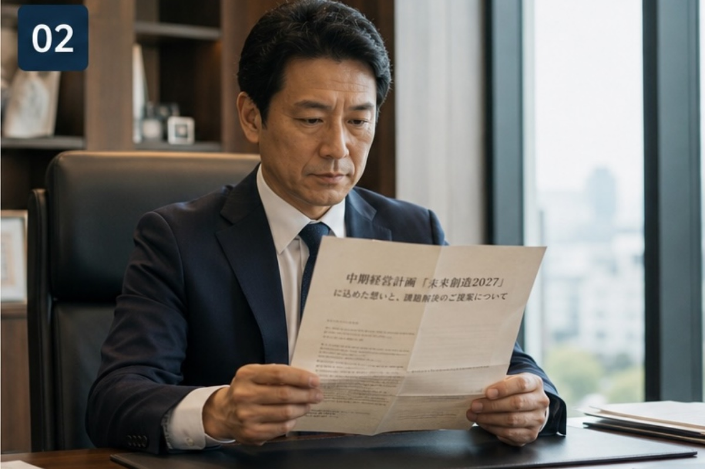
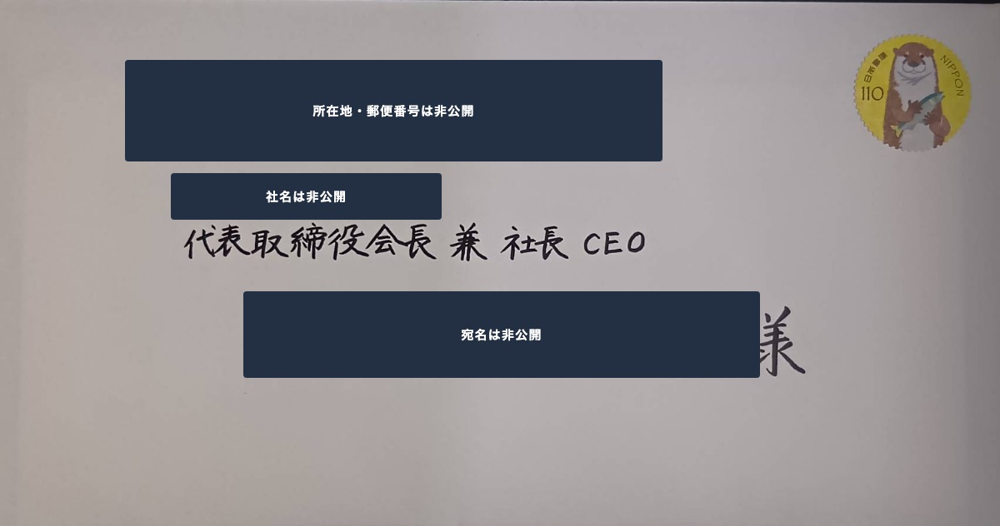
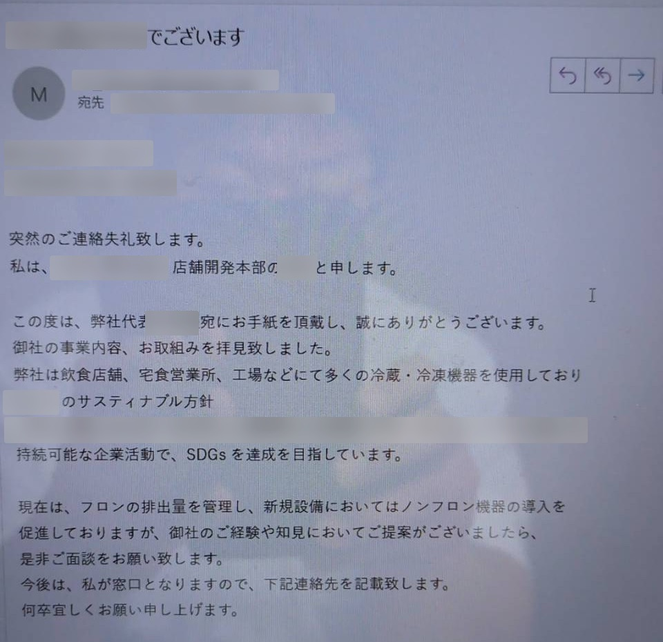

大手飲食チェーン本部 ／ 新規開拓特化
店舗でも、展示会でもなく。 チェーン本部の社長から、 商談を降ろす。
大手飲食チェーンは、店舗や現場担当からいくら評価されても、本部の稟議には上がりません。
かざあな隊は、中期経営計画を1社ずつ読み込んだ手紙を社長・役員宛に届け、秘書室への追電で商談化する。
「大手の扉を開ける」ことだけに特化した会社です。
相談は無料です。商材の相性が合わないと判断した場合は、その場で正直にお伝えします。
10社に1社
アポ獲得の基準値
大手向け商材における当社の基準値。保証ではありません。
約4割
追電で秘書室に繋がる割合
手紙の到着確認という事務連絡の形で架電した場合の目安。
役員クラス
商談相手のレイヤー
社長宛に送るため、本部長・部長・執行役員から返信が届きます。
PROBLEM
こんなお悩みは
ありませんか？
大手飲食チェーンの開拓でつまずくポイントは、だいたい次の3つに集約されます。
店舗には刺さるのに、
本部に上がらない
店長も現場も「いいですね」と言ってくれる。けれど本部の商品部・購買部まで話が届かず、テスト導入の稟議が起票されないまま終わる。
担当者止まりで、
予算の話にならない
アポは取れる。ただし出てくるのは現場担当者。決裁権も予算枠も持たないため、「一度持ち帰ります」の先が動かない。
テレアポも
フォーム営業も枯れた
代表番号は受付でブロック。問い合わせフォームは一括送信が飽和し、大手ほど開封すらされない。展示会の名刺も温度が上がらない。
原因は、営業力ではなく「入口の高さ」です。
大手飲食チェーンの意思決定は、中期経営計画 → 各部門のKPI → 予算、という順で降りてきます。 つまり「どの予算で、どの取り組みのために買うのか」が中計に紐づいていない提案は、現場が気に入っても稟議が通らない。 逆に言えば、最初から中計に紐づけて社長・役員に届けば、話は一気に速くなります。
FEATURE
かざあな隊が選ばれる、2つの理由。
他社との違いは、この2点に尽きます。
特長01
中計はめ込みを、量産できる
1社1社の中期経営計画を読み込んで手紙を設計する——言うのは簡単ですが、これを毎月数十社分、品質を落とさず回すには仕組みが要ります。 「丁寧なカスタマイズ」を再現性のある工程にしたのが1つ目の理由です。
- 出店・改装計画、省人化、原価対策、フードロス、店舗DX、人材採用——対象1社ごとにIR資料と公開情報を読み込む
- タイトルに先方の施策名をそのまま使い、本文まで1社ずつ書き下ろす
- 読み込みマニュアル・構文ルール・差出人設計・品質チェック基準を標準化
- コピペのDMではないため、大手ほど「読まれる手紙」になる
御社の商材が、どの施策にはめ込めるか。無料相談でその場で仮説をお出しします。
仮説を聞いてみる特長02
「秘書と受付は人種が違う」を知っている
代表番号の受付は、売り込みを切るのが仕事。一方秘書は、社長宛の約束を預かって待ってくれる職種です。 この違いを踏まえて手紙を「届けて終わり」にしないのが2つ目の理由です。
- 秘書突破のための架電チャート（台本）を保有
- テレアポではなく「手紙の到着確認」という事務連絡のトーンで架電
- 届いているか、いつまでに返事をもらえるかまで握る
- この形での架電で、秘書室に繋がる割合は約4割が目安
実際の架電トークと、返信までの流れをご説明します。
詳しい説明を受けるMETHOD
かざあな隊の3ステップ
「社長の指示で決裁者を引っ張り出す」。ここだけに特化した設計です。
-
STEP 1
チェーン本部の中期経営計画を読み込む
対象1社ごとに公開情報とIR資料を読み込み、「御社のサービスがどの施策に効くか」を特定します。読み込み専用のマニュアルと人員を持ち、高い精度で量産できることが土台です。
-
STEP 2
社長・役員宛の手紙を、1社ずつ書き下ろす
タイトルに先方の施策名をそのまま使い、「御社は◯◯をされている会社です。その課題に対して当社は△△を提供できます」という型で組み立てる。宛名は担当者ではなく社長・役員に直接送ります。
-
STEP 3
秘書室に追電し、「返事の期日」を握る
送りっぱなしにはしません。専任スタッフがテレアポではなく事務連絡として架電し、「先日お送りした手紙の到着確認をしたいので秘書室をお願いします」と繋ぎます。
その結果、起きること
手紙に記載した代表アドレス宛に、先方の本部長・部長クラスから返信が届きます。 「社長の◯◯より指示をいただきご連絡しております」「弊社代表宛にお手紙を頂戴しありがとうございました」—— アウトバウンドの施策なのに、インバウンドのように商談が決まる。 社長の命を受けた決裁者が出てくるため、扱いが丁寧で、話が速く、金額が大きくなります。
LETTER
その手紙は、こう読まれる。
秘書の手で開かれ、社長が読み、決裁者に渡るまで。

※ 写真はイメージです。
-
01
三つ折りのまま、秘書の手に届く
和紙に印刷したA4を三つ折りにして封入。宛名は担当者ではなく社長・役員宛。まず秘書室で開封され、社長に上げるべき手紙かどうかが判断されます。ここを越えられない郵送DMがほとんどです。
-
02
開いた瞬間に、自社の話だと分かる
見出しに入るのは、先方の中期経営計画にある施策名そのもの。「よその会社にも送っている手紙」ではないことが、一行目で伝わります。ここが読まれるかどうかの分かれ目です。
-
03
社長から、決裁者へ渡る
社長宛に届いた手紙は社内で回り、担当部門へ指示が降ります。数日後、手紙に記した代表アドレスに、本部長・部長クラスから返信が届きます。
CASE
大手飲食チェーン本部から、返信が届くまで。
冷蔵・冷凍設備を扱う事業者様から、全国展開する大手外食チェーンへの1通。
受付でも、店舗でも、現場担当者でもなく——本部から「ご面談をお願いします」と返ってきます。
※ 実際のお取り組みをもとに再現したサンプルです。社名・氏名はすべて架空のものに置き換えています。

送った手紙サンプル
宛名は担当者ではなく、代表取締役社長 宛。 先方のサステナビリティ方針を読み込んだうえで、その施策に自社の何が貢献できるかを書き下ろします。

届いた返信サンプル
店舗開発本部の担当者から直接返信。 「弊社代表宛にお手紙を頂戴し」から始まり、ご面談の依頼と窓口の指名まで届きます。 ※ 実際の返信をもとに再現した文面です。社名・氏名は架空のものに置き換えています。
BEFORE
- アプローチ先は店舗・現場担当が中心
- 本部の商品部・購買部まで話が届かない
- 代表番号は受付でブロックされる
- 提案しても稟議が起票されない
AFTER
- 手紙が代表に届き、社内で回る
- 店舗開発本部の担当者が「私が窓口となります」と名乗り出る
- 先方の方針・施策の文脈で返信が来る
- 先方側から面談を依頼される
この1通で起きたこと
POINT01
社長宛が、本部の窓口に変わった
代表宛に届いた手紙が社内で回り、店舗開発本部の担当者が「私が窓口となります」と名乗り出る形に。テレアポでは到達できない層です。
POINT02
先方の方針の言葉で、返事が来た
返信には先方自身のサステナビリティ方針の名称と、公表している「SDGs達成」の文言がそのまま並びました。方針に紐づけて書いた手紙だからこそ、その文脈のまま返ってきます。
POINT03
先方から「ご提案がございましたら」
新規設備の具体的な検討テーマに触れたうえで、先方側から面談を依頼される展開に。アウトバウンドで送った手紙が、インバウンドの問い合わせのように着地します。
※ 掲載している封筒・返信メールは、実際のお取り組みをもとに再現したサンプルです。
掲載許諾の関係で、社名・氏名・住所・文面はすべて架空のものに置き換えています（実在の企業・人物とは関係ありません）。
※ 本事例は成果を約束するものではありません。商材・業界・対象企業の規模によって結果は変わります。
VOICE
大手企業からの反応
飲食以外の業界でも、同じ形で決裁者から返信が届いています。
「社長の◯◯より指示をいただきご連絡させていただいております。早速ですが、もしご都合よろしければ——」
「弊社代表宛にお手紙を頂戴しありがとうございました。小職が担当いたします。貴社ホームページも拝見し、非常に興味を持たせていただきました」
「社長の◯◯宛にお手紙をいただきました。社長に代わり、わたくしが対応いたします」
※ 実際に当社が獲得した商談の返信文面を、企業が特定されない形に編集して掲載しています。個別の実績は商談時に開示します。
FIT
正直に、向き不向きをお伝えします。
合わない商材を無理に受注しても、双方が不幸になるだけなので。
相性が良い
- 店舗DX・モバイルオーダー・勤怠/シフト管理などのSaaS・システム
- 省人化を実現する厨房機器・設備・ロボティクス
- 原価・フードロス対策に効く食材・資材・仕入れ支援
- 採用・定着・教育などの人材/研修サービス
- 中期経営計画に紐づけられる文脈がある無形商材
- 意思決定が社長・役員レベルで動く商材
注意が必要
- 意思決定が店舗・現場担当者で完結してしまう商材
- 単価が大手の予算感に対して高すぎる／小さすぎるもの
- 主なターゲットが個人店・中小のみの商材
- 中計・経営課題に接続する文脈が作れないもの
「うちの商材はどうか」も、無料相談で率直にお答えします。
PRICE
料金の目安
1社にかける工数が大きいため成功報酬ではなく、「月に何社へ手紙を届けるか」で組み立てます。 社数が増えるほど1社あたりの単価は下がります。
月額
¥150,000〜
（税別・別途初期費用）
- プラン月あたりのアプローチ社数で3段階
- 単価社数が増えるほどボリュームディスカウント
- 期間ベース構築（約1ヶ月）＋実働
- 支払一括前入金／月払いいずれも相談可
御社の商材・狙うチェーンの規模・想定社数によって最適なプランは変わります。 具体的な金額とプラン構成は、無料相談で御社の条件に合わせてご提示します。
料金の詳細を聞くオプション：援護射撃
獲得した商談を“受注”に変えるための、商談まわりの個別サポートです。
商談前の作戦会議
大手役員との商談に向けて、トーク設計と想定問答をすり合わせます。
商談資料の作成代行
本部に刺さる提案・ヒアリング資料を、御社に代わって作成します。
商談同行
大手攻略の経験を持つ担当が同席し、その場でクロージングを後押しします。
※ オプションはすべて任意です。料金・適用単位は商談内容に応じてご相談ください。
FLOW
サービス開始までの流れ
-
STEP01
無料相談
商材・現在の開拓状況・狙いたいチェーンの規模感をヒアリング。相性が合うかを率直にお伝えします。
-
STEP02
ご契約・キックオフ
プランを決定し、専任のプロジェクトマネージャーが担当につきます。
-
STEP03
ベース構築（約1ヶ月）
商品理解、ターゲットリストの方向性協議、提案方向性のすり合わせ、手紙の構文案作成まで。ここが成果を左右します。
-
STEP04
投函・追電（実働）
毎月の対象社数に対して、手紙の作成 → 投函 → 秘書室への追電までを実行します。
-
STEP05
商談化・月次報告
決裁者から返信が届いたら御社へ連携。月次定例で進捗と改善方針を共有します。
FAQ
よくあるご質問
アポ獲得率10%は保証されますか？
保証はしておりません。10社に1社というのはあくまで当社の基準値であり、商材・業界・対象企業の規模によって結果は変わります。保証をお約束することはできないため、その前提でご検討ください。なお、リストや手紙の方向性が適切であったにもかかわらず成果が振るわない場合の延長措置についてはご相談に応じます。
ターゲットとなる飲食チェーンのリストは自社で用意が必要ですか？
いいえ。業種・規模・エリア・上場区分などの基準を協議したうえで、当社がリストを作成します。御社にすでに狙いたい企業リストがある場合は、それをベースに設計することも可能です。
手紙はテンプレートの使い回しではないのですか？
使い回しません。対象1社ごとに中期経営計画・IR資料・公開情報を読み込み、タイトルから本文まで書き下ろします。差出人設計や、先方の施策名をそのままタイトルに使う構成など、細部まで1社ごとに設計します。
非上場のチェーンは中期経営計画がありませんが、対象外ですか？
対象外ではありません。非上場の場合はIRの代わりに、経営計画・出店計画・採用情報・代表インタビュー・プレスリリースなど公開情報を読み込み、経営課題の仮説を立てて設計します。上場企業に比べて材料は限られますが、その分ライバルも少ない領域です。
成果が出るまでどのくらいかかりますか？
ご契約後、約1ヶ月のベース構築期間を経て投函が始まります。手紙の到着から返信までにも先方社内の時間がかかるため、最初の商談化まで数ヶ月単位で見ていただくのが現実的です。単月の結果ではなく、期間全体での積み上げでご判断ください。
商談が決まっても、大手役員相手に何を話せばいいか分かりません。
その悩みは多くのお客様が持たれます。当社には大手攻略のための商談ノウハウがあるため、必要に応じて商談前の作戦会議・資料作成代行・商談同行をオプションでご用意しています。必須ではありませんので、必要な分だけお申し付けください。
大手飲食チェーンの扉を、
こじ開けにいきませんか。
まずは無料相談で、御社の商材が大手飲食チェーンに刺さるかを一緒に見極めましょう。
相性が合わないと判断した場合は、その場で正直にお伝えします。